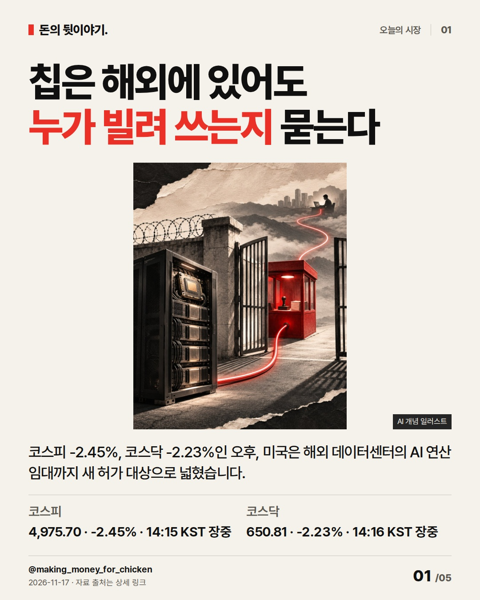
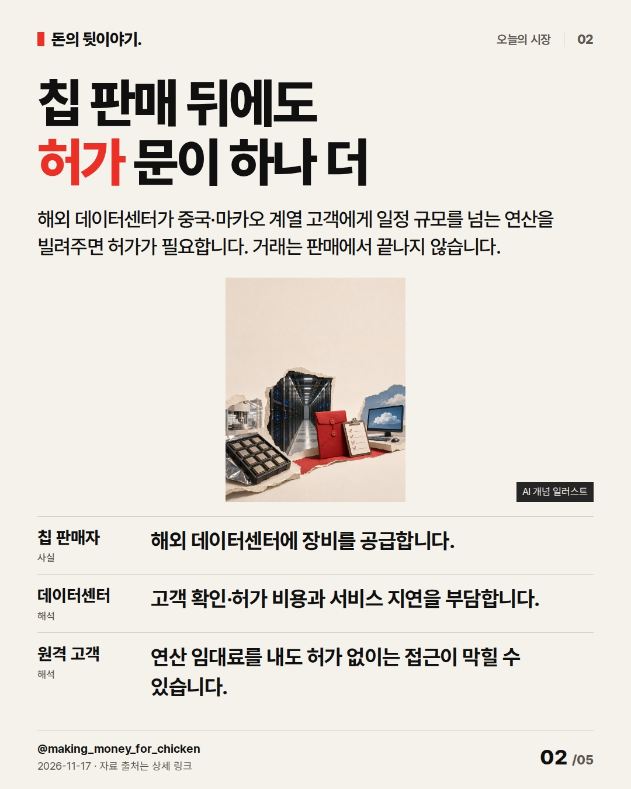
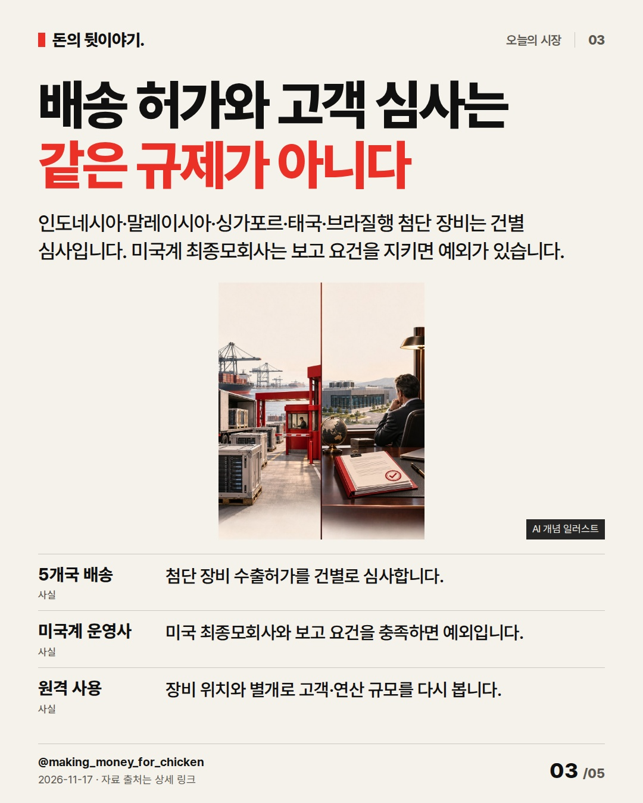
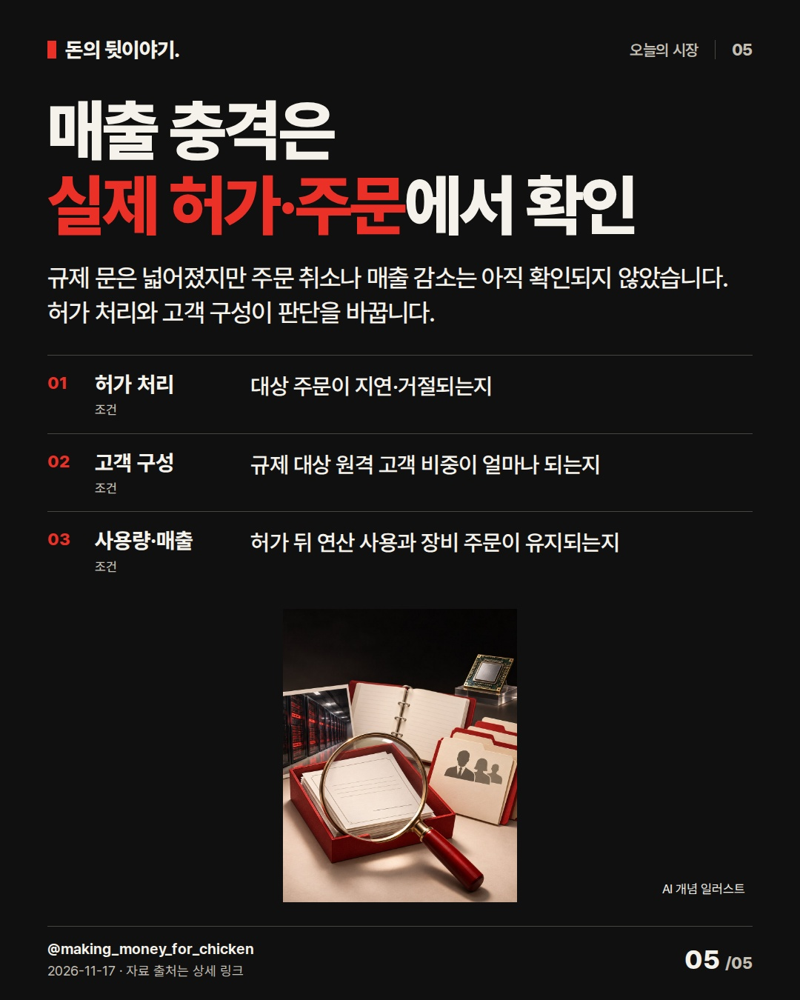

미국의 새 규칙은 칩의 배송지만이 아니라 해외 데이터센터에서 누가 연산을 빌려 쓰는지도 묻습니다. 매출 충격은 허가 지연과 실제 주문·사용량에서 확인해야 합니다. #AI반도체 #수출규제 #데이터센터

코스피 -2.45%, 코스닥 -2.23%인 오후, 미국은 해외 데이터센터의 AI 연산 임대까지 새 허가 대상으로 넓혔습니다.
AI 생성 개념 일러스트 · 실제 현장이나 공식 제품 사진이 아닙니다.

해외 데이터센터가 중국·마카오 계열 고객에게 일정 규모를 넘는 연산을 빌려주면 허가가 필요합니다. 거래는 판매에서 끝나지 않습니다.
AI 생성 개념 일러스트 · 실제 현장이나 공식 제품 사진이 아닙니다.

인도네시아·말레이시아·싱가포르·태국·브라질행 첨단 장비는 건별 심사입니다. 미국계 최종모회사는 보고 요건을 지키면 예외가 있습니다.
AI 생성 개념 일러스트 · 실제 현장이나 공식 제품 사진이 아닙니다.
연방관보 게재일에 규칙이 발효될 예정입니다. 이미 대상 연산을 제공하는 데이터센터도 90일 안에 허가를 받아야 계속 서비스할 수 있습니다.
AI 생성 개념 일러스트 · 실제 현장이나 공식 제품 사진이 아닙니다.

규제 문은 넓어졌지만 주문 취소나 매출 감소는 아직 확인되지 않았습니다. 허가 처리와 고객 구성이 판단을 바꿉니다.
AI 생성 개념 일러스트 · 실제 현장이나 공식 제품 사진이 아닙니다.
{
"improvement": "최근 5편은 3장 이후 지수 하락·수급 결론을 다시 말하는 경향이 있었습니다. 이번에는 새 규칙→돈의 이동→배송·고객 심사 비교→90일 시한→매출 판단 조건으로 각 장의 질문을 바꿨습니다.",
"reason": "불스토리 9/7 공개 미러의 실제 카드 5장·캡션은 질문 뒤 작동 방식과 실제 주문 조건을 분리했습니다. 홍춘욱 공식 전사는 수출과 고용 사이 경로·시차를 풀었습니다. Bloomberg 리드와 Morning Brew 전체 기사도 임대·우회 거래의 주체 배치를 비교했습니다.",
"application": "초안 ‘미국이 AI칩 수출규제를 강화했다’→퇴고 ‘칩은 해외에 있어도 누가 빌려 쓰는지 묻는다’. 2장에 판매자→데이터센터→원격 고객의 돈·허가 경로를 넣고 3장은 동일 기준으로 배송 심사와 미국계 보고 예외를 비교했습니다.",
"avoided_repetition": "전날의 반도체 낙폭·외국인 매도·엔비디아 주문 확인을 결론으로 재사용하지 않았습니다. 규제가 곧 주문 취소·한국 반도체 매출 감소로 이어진다는 단정도 버렸습니다. 다음 편은 실제 허가 지연과 고객별 사용량이 공개될 때만 매출 경로를 보완합니다. 반응 지표 미확보."
}투자 참고용 · 매수·매도 권유 아님.